I'm a fourth-year Biomedical Engineering student based in
Madrid currently seeking a
software engineering internship.
I'm an American student currently living in Spain. As both an
EU and US citizen, I have a unique perspective on the
world which has helped me adapt to diverse environments and
communicate effectively across cultures.
After years of studying biomedical engineering, I'm pivoting fully
into software engineering. Throughout the course of my degree
I've had the opportunity to work with a variety of different
concepts including electronics, signals and systems, and complex
mathematical solutions. Ultimately, I've found that my first year
Data Structures & Algorithms course is whats stayed with me
the most.
Whether it's picking up a new framework or diving into the AWS Cloud
system, I'm always exploring ways to grow. I take initiative, pay
attention to the details, and genuinely enjoy programming as an
art form.
My primary focus is app development, both mobile and
web-based.
As I'm continuously broadening my horizons by learning new
languages, I've found the more I learn,
the easier it is to learn more. Now, I'm switching gears and
specializing in app development to strengthen my current
knowledge.
Scroll down to check out my recent projects!
Lipid Identifier
Metabolomics Desktop App for Biomedical Data Processing
Java
MySQL
Java Swing
SQL Injection Prevention
Scientific Software Development
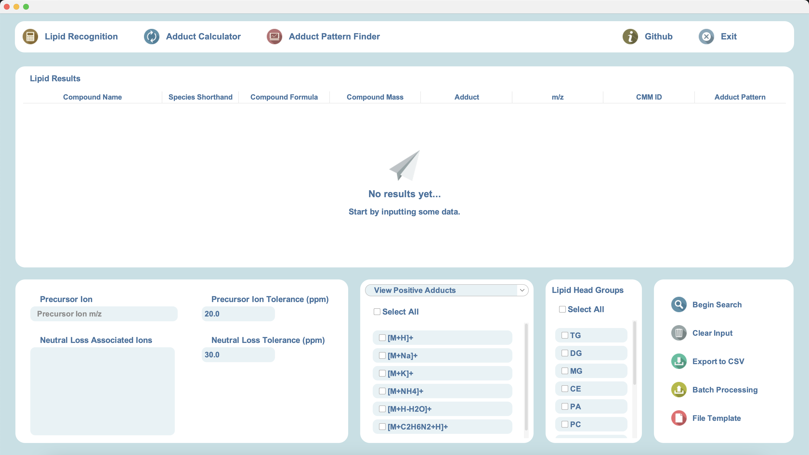
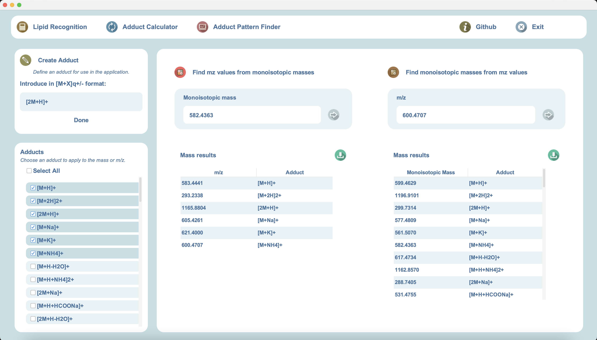
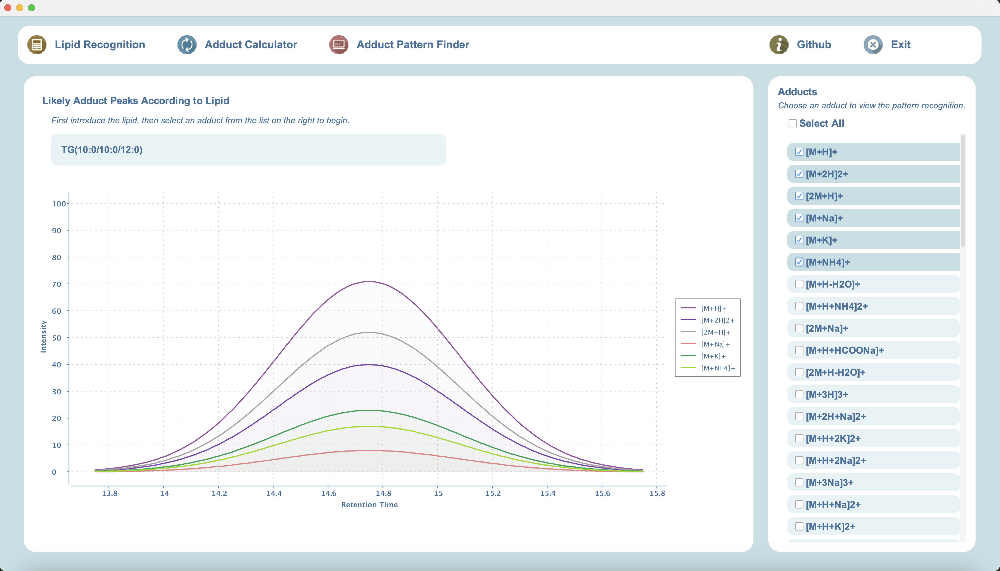
Lipid Identifier is a desktop application intended for use by
the CEMBIO laboratory, a metabolomics lab based at Universidad CEU San
Pablo. The app, built in Java Swing, accepts input produced as a
result of mass spectrometry-based testing and accurately
identifies the chemical compounds that this data corresponds to,
streamlining the investigative process and
identification of unknown compounds. This project led to me
working closely with researchers and introduced me to product
development and the importance of aligning my views with the client's.
Supported researchers in identifying and interpreting lipid profiles
efficiently.
Built a modular GUI using Java Swing with dedicated tools for lipid
ID, adduct calculations, and intensity analysis.
CEU Mass Mediator Website
Front-End Redesign & Feature Expansion
React
JavaScript
HTML/CSS
PostgreSQL
Agile
UX/UI Design
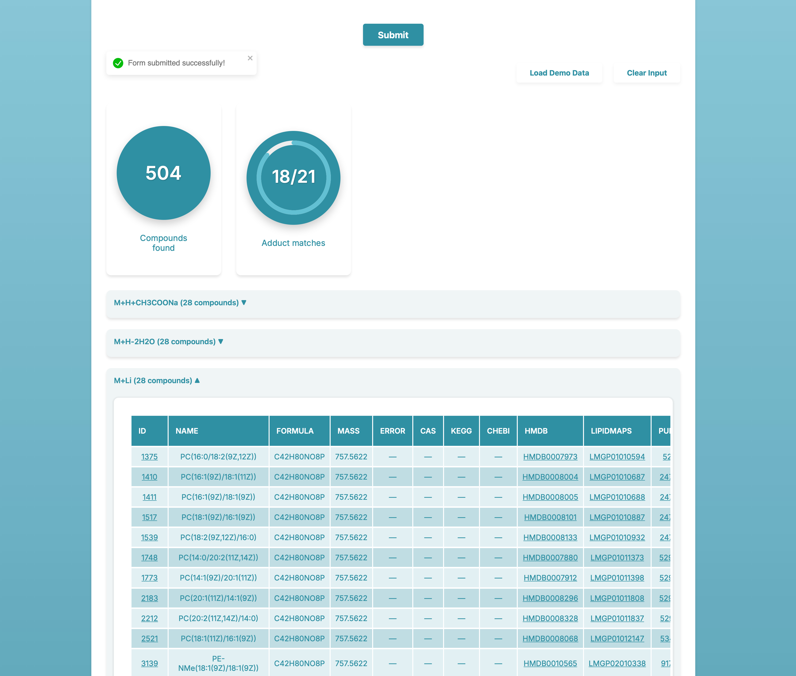
The CEU Mass Mediator website, CMM, is a research-based website
for the field of metabolomics. It supports input data from several
different testing techniques including mass spectrometry, liquid
chromatography, and capillary electrophoresis. CMM Version 4.0,
the current updated website, presents a largely refactored application
as the front-end, completed by me, has been entirely rewritten in
React. Furthermore, I added several new key features such as the
interactive pathway displayer and the 2D and 3D modeling of compounds.
Refactored and redesigned the CEU Mass Mediator site used for
biomedical data visualization.
Collaborated through Agile pair programming and applied real-time
feedback loops.
Improved accessibility and UX using user-centered design for
researchers and students.
Libretta Mobile Application
Kindle & Goodreads based iOS Application
Swift
UX/UI Design
iOS Development
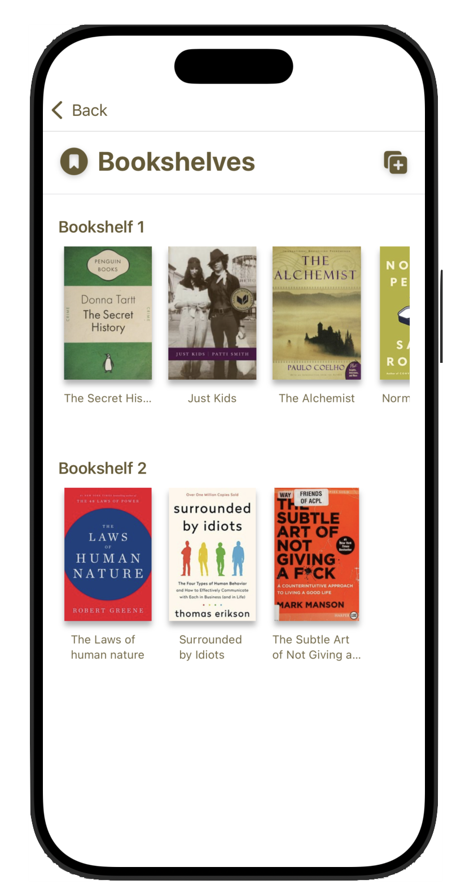
Libretta is an iOS application that combines Kindle's e-reader
capabilities with Goodreads' interactive ratings system. Being an avid
reader, I wanted to build a project that combined both of my passions
together: reading and programming. Built on XCode and
supported by the OpenLibrary API, Libretta offers users an
intuitive and gamified app which encourages a reading streak, suggests
new titles, and allows users to interact with an aesthetic,
approachable design.
Designed and implemented a full-stack iOS application built solely
in Swift.
Considered user stories, data metrics, and feedback to optimize and
continuously refactor code.
Libretta Web Application
Kindle & Goodreads based Web Application
HTML/CSS
JavaScript
Node.js
APIs
UX/UI Design
The Libretta website works together with the mobile application
to provide users with a cohesive, comprehensive app where they can
track their reading, set goals, and interact with friends. I chose to
develop this project in pure JavaScript to ensure I had a strong grasp
on the fundamentals before continuing with frameworks such as
React.
My goal with Libretta was to create an app that I would like to use in
my
day-to-day life, one which would encourage daily reading and
help introduce me to new books. As a user, I appreciate when strong
attention to detail is given to an app's aesthetic. For that reason, I
dedicated myself to designing and planning Libretta before I began
coding. This allowed me to develop an app that I use everyday to
record the pages I've read, save new books I'm reading, and review
books I've already read.
Designed and implemented a full-stack web application built in
HTML/CSS, JavaScript, and Node.js.


 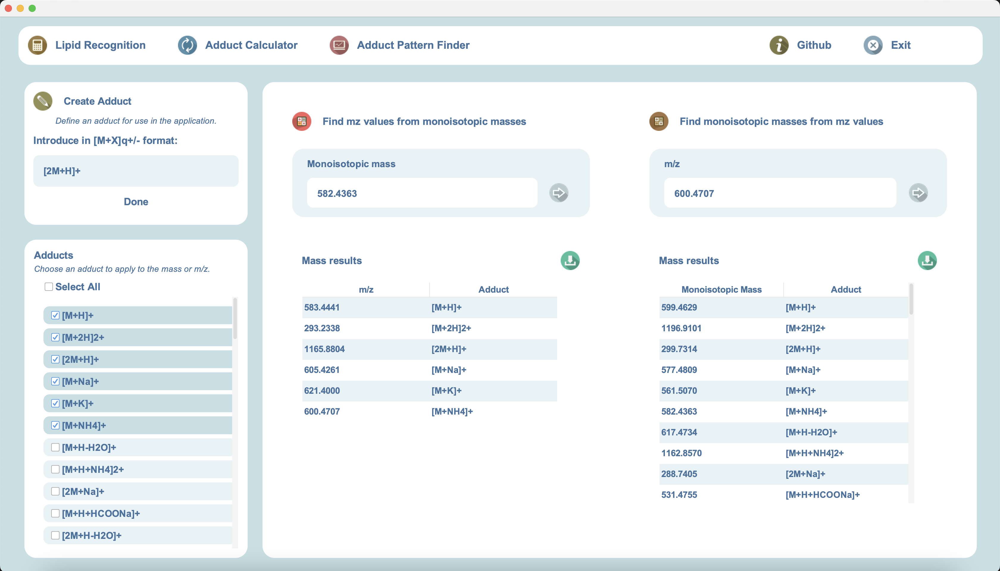
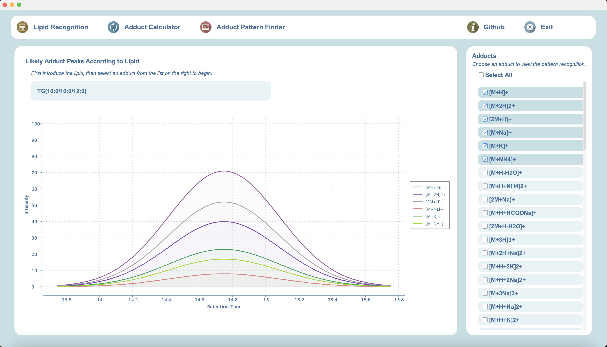
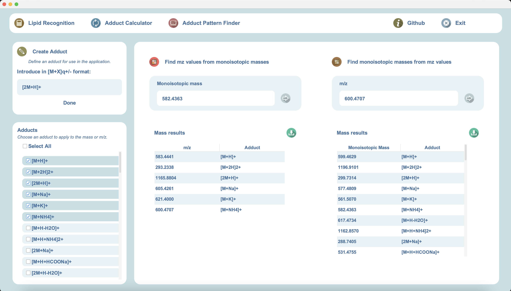
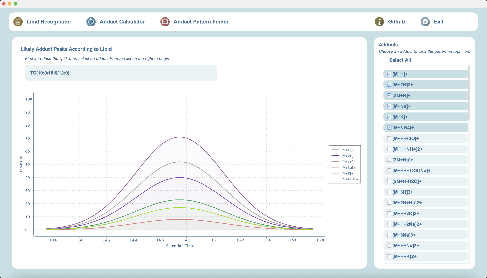

 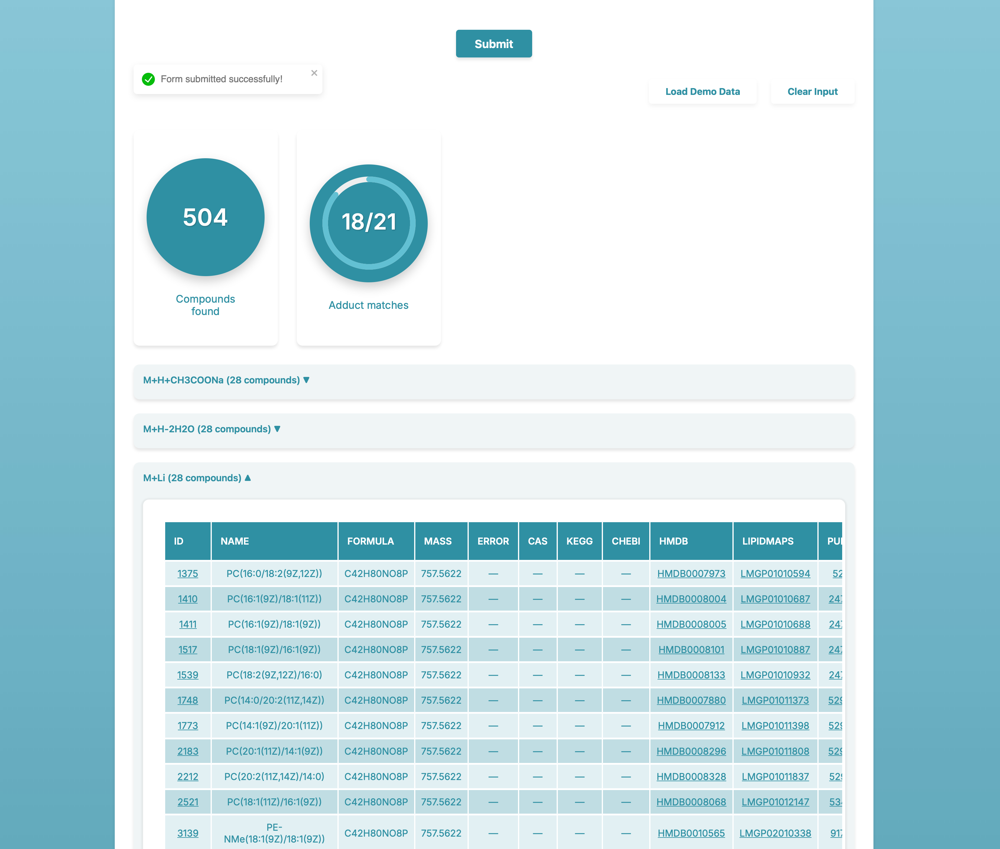
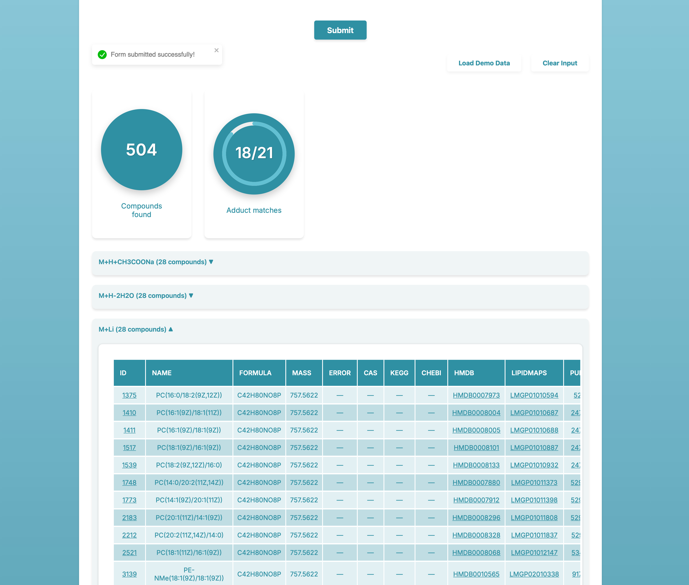